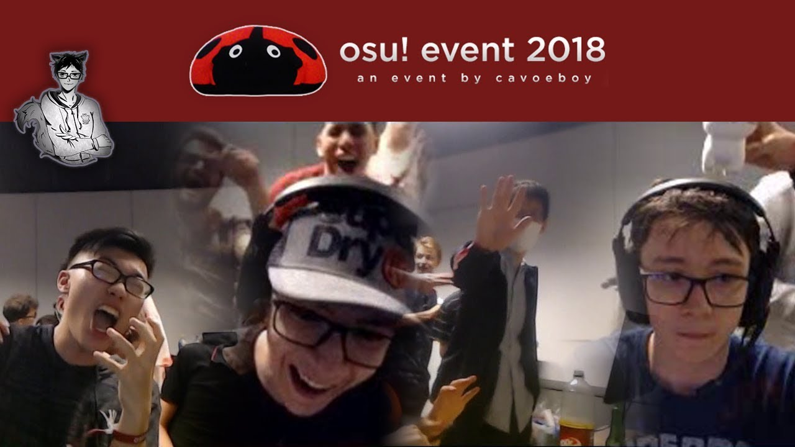
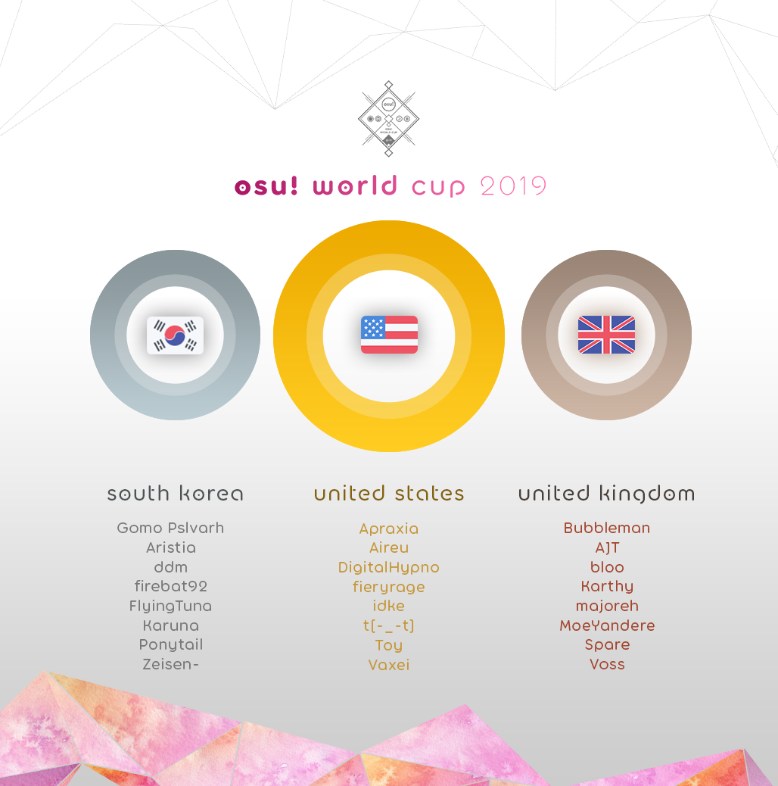

**********************************************************************************************************
I have always loved rhythm games since when I was born. Initially, I played on the mobile version of this game which is not as good as the PC version but it was a rhythm game. My friend who was an extreme osu fan recommended me it, he later introduced me to the PC version of the game, which had more variety of maps to choose from, and more modes you can play with customized skins.
The community
The main reason that made me love this game and never wanting to quit is because the game has the best community in the world (in my opinion). People will congratuate you for making a good play, and the players are friendly and easy to make friends with. In addition, I am an anime fan, while 80% of the community are also anime fans, making it easier for everyone to get along with me. I have met lots of great people since I have came on to this game. In addition, the game takes suggestions from the community consisently and never ignores us. It's probably due to the fact that the community is not as big as the mainstream games. Here are some of the events that have taken place which were sponsored by the players, or suggested by players and made true.
 My Improvement
In addition, another reason to why I love this game is because I feel like I have a talent in this game, The reason is because I have 13days of playtime and I am rank 15,000 in the world. Compared to other people that have 25days of playtime, they are around rank 60,000 in the world. Here is an accurate representation of how my global rank rose.
| Month | Rank | Rank in Country |
|---|---|---|
| January 2019 | ~600,000 | 78,000 |
| May 2019 | ~178,000 | 18,000 |
| September 2019 | 78,000 | 7,000 |
| December 2019 | 34,285 | 2,700 |
| Febuary 2020 | 16,737 | 638 |
osu profile
osu!ctb
Also known as catchthebeat, this is one of the most popular japanese minigames since the 20th centuary. osu!ctb is a budget version of the real japanese catchthebeat